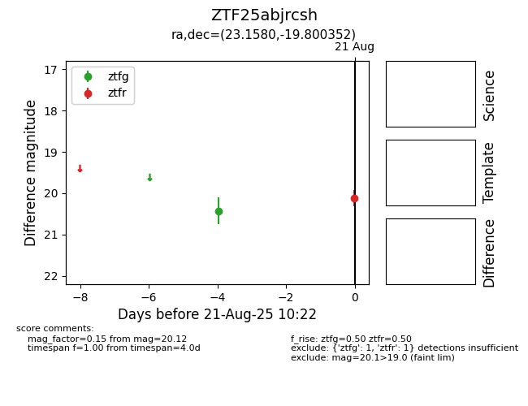

Target ZTF25abjrcsh at 2025-08-21 10:22, see:
FINK: fink-portal.org/ZTF25abjrcsh
Lasair: lasair-ztf.lsst.ac.uk/objects/ZTF25abjrcsh
ALeRCE: alerce.online/object/ZTF25abjrcsh
alt names
ZTF25abjrcsh (ztf,alerce)
coordinates:
equatorial (ra, dec) = (23.1580,-19.80035)
galactic (l, b) = (177.2845,-78.05370)
photometry
last ztfg=20.43, ztfr=20.12
1 ztfg, 1 ztfr detections
